Stacked washer and dryer setups keep showing up everywhere for a simple reason, they free up real floor space in a home that doesn't have a spare room to dedicate to laundry alone.
They work in real homes too, not just staged showrooms. A closet, a hallway, even a corner of a bathroom can become a fully functional laundry spot once the unit goes vertical instead of side by side.

17 Stacked Laundry Room Ideas
1. Ultra-Compact for Tiny Homes
Small doesn't have to mean useless, even in a genuinely tiny footprint.
Slim machines, vertical storage, and wall-mounted accessories make the most of a space smaller than most closets.
A setup smaller than a standard closet can genuinely outperform a full-size laundry room when the design is actually thought through.
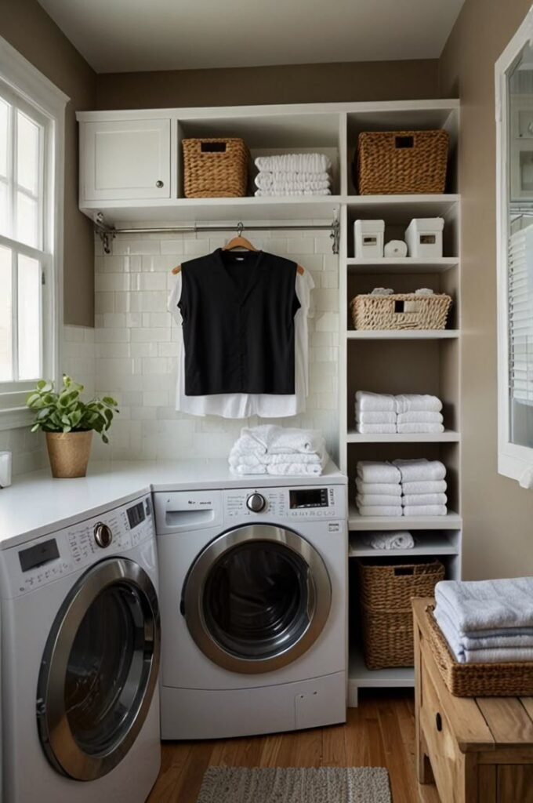
2. With Pull-Out Hampers
This setup keeps clutter genuinely under control by giving dirty clothes a designated, hidden spot.
It streamlines the whole workflow and keeps the space looking clean even mid-laundry-pile.
Built-in hampers make the entire process feel organized before a single load even starts.
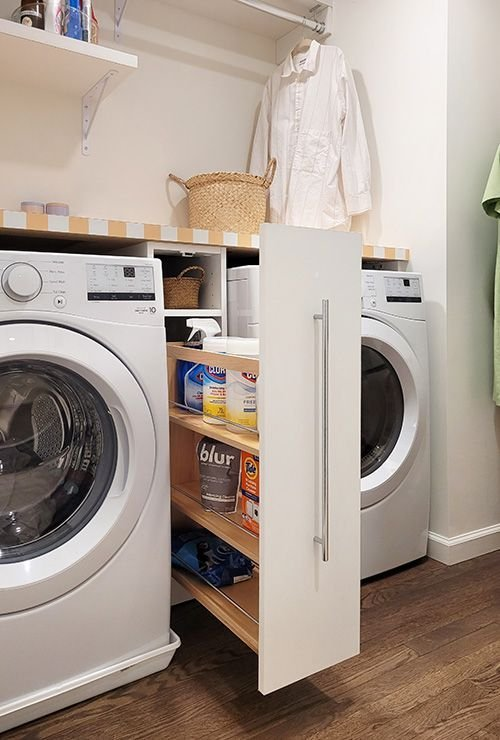
3. Luxe, With Wallpaper
Wallpaper genuinely belongs in a laundry room, despite how that might sound at first.
It adds real personality, elevates a small space instantly, and creates visual interest that paint alone rarely manages.
Choosing a washable wallpaper is worth the small extra cost, living dangerously isn't really the goal in a room that handles this much moisture.
4. Budget-Friendly Makeover
Custom cabinetry isn't actually required to pull off a genuinely good-looking stacked laundry spot.
A peel-and-stick backsplash, some open shelving, and new lighting deliver real visual impact for very little cost.
Small, well-planned changes add up to results that read as considerably more expensive than they actually were.
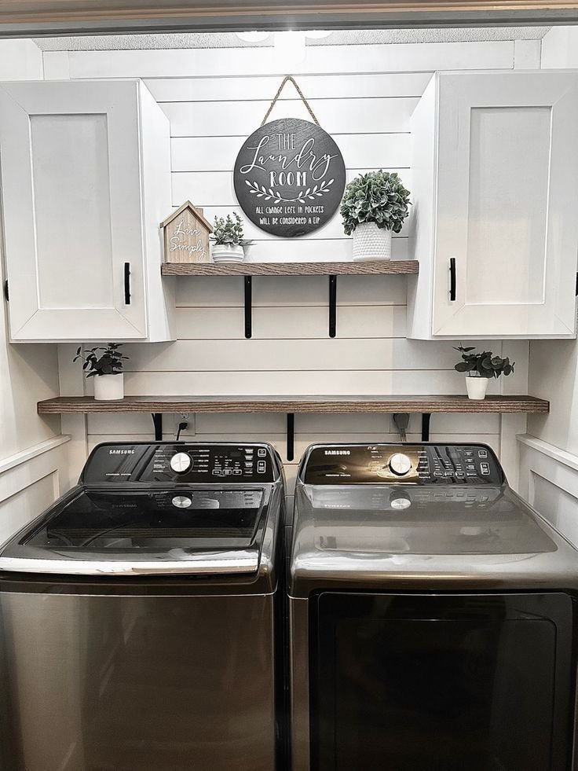
5. Combined With a Mudroom
Pairing a stacked unit with a mudroom is close to a genius move for handling daily mess.
It catches dirty clothes immediately, keeps mess contained to one zone, and adds real efficiency to the daily routine coming in and out of the house.
Hooks, a bench, and extra storage all add to the impact here, the mudroom-laundry combo earns its keep fast.
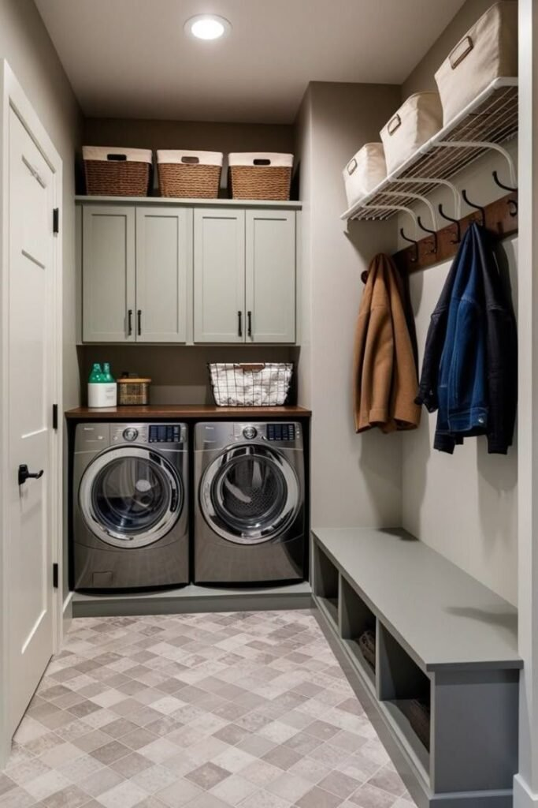
6. Family-Friendly Setup
For a household with kids, planning the laundry space around them specifically saves real daily friction.
Labeled baskets, easy-access shelves at a reachable height, and genuinely durable finishes all hold up to real family use.
A well-designed system here saves both time and arguments, which matters more in a busy household than almost anything else.
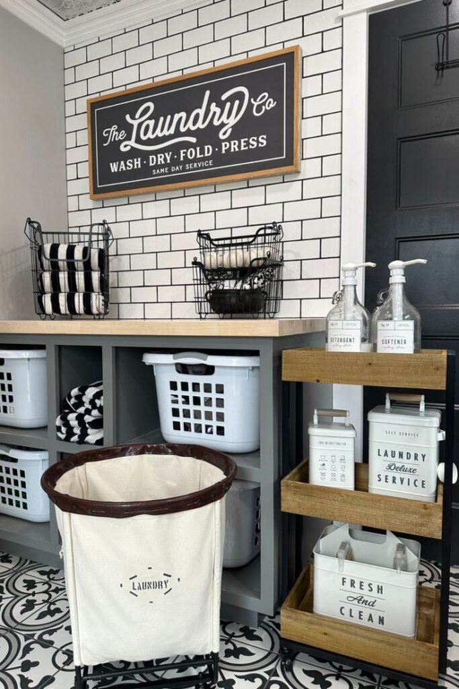
7. Industrial-Style
This look leans fully into raw, unfinished materials rather than hiding them.
Exposed pipes, metal shelving, and a concrete or tile floor all build that industrial character.
It suits a basement or a loft-style home especially well, where the rest of the space already leans toward exposed, utilitarian materials.
8. With Hidden Storage Nooks
In a stacked setup, every single inch genuinely counts, and hidden storage nooks make the most of what's otherwise wasted space.
Pull-out shelves, slim side cabinets, and a vertical storage tower all tuck into gaps that would otherwise sit empty.
These small details turn an already tight footprint into a genuine storage powerhouse.
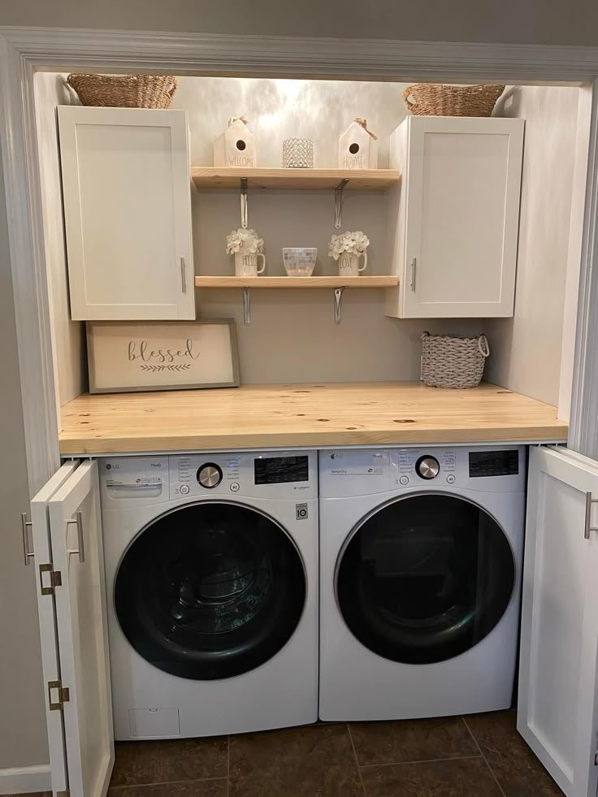
9. Scandinavian-Inspired
Clean, calm, and genuinely functional, a Scandinavian approach suits a stacked laundry spot especially well.
Light wood tones, neutral colors, and minimal clutter keep the whole space feeling peaceful rather than purely utilitarian.
It sounds almost absurd until it's actually experienced, but a calm laundry space genuinely changes how the chore feels day to day.
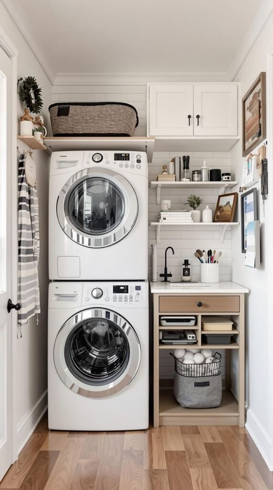
10. With a Folding Station
This single addition changes the whole experience of doing laundry in a stacked setup.
A countertop placed above front-loading machines reduces wrinkles, speeds up the whole process, and saves real strain on the back.
Once a proper folding surface is in place, going back to folding on a bed or couch stops feeling like an option.
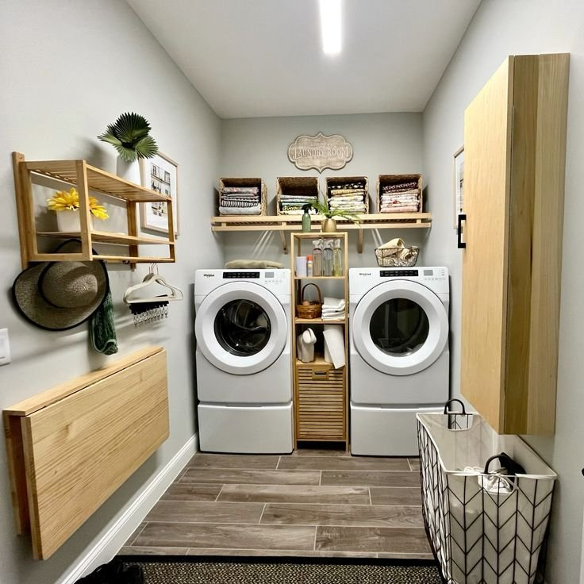
11. Moody and Dark, for Drama
Laundry doesn't have to feel boring or purely utilitarian. Dark cabinetry pushes the space in a completely different direction.
Matte black hardware and warm lighting finish the look, turning a chore zone into something with genuine atmosphere.
Folding clothes in a moody, well-lit space ends up feeling oddly luxurious, an unexpected upgrade for a room nobody usually designs around.
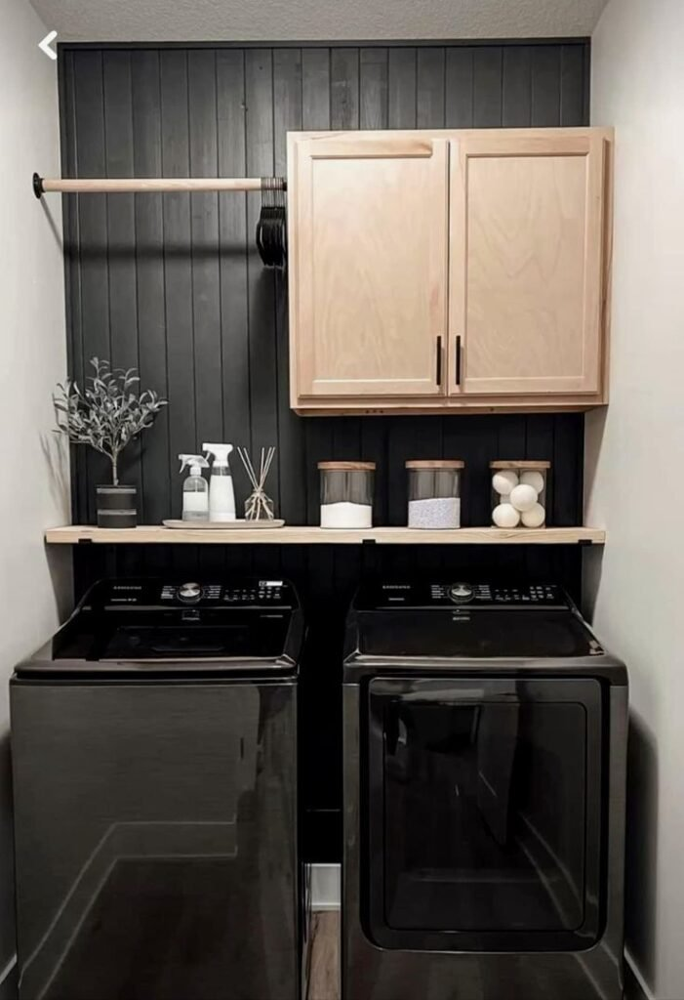
12. Minimalist White
Sometimes simple genuinely wins. White cabinets, white machines, and clean lines keep a stacked laundry spot feeling fresh and timeless.
The look avoids ever feeling dated, which matters in a utility space that doesn't get redesigned often.
It also makes a small room feel noticeably bigger, which is rarely a downside in a tight laundry footprint.
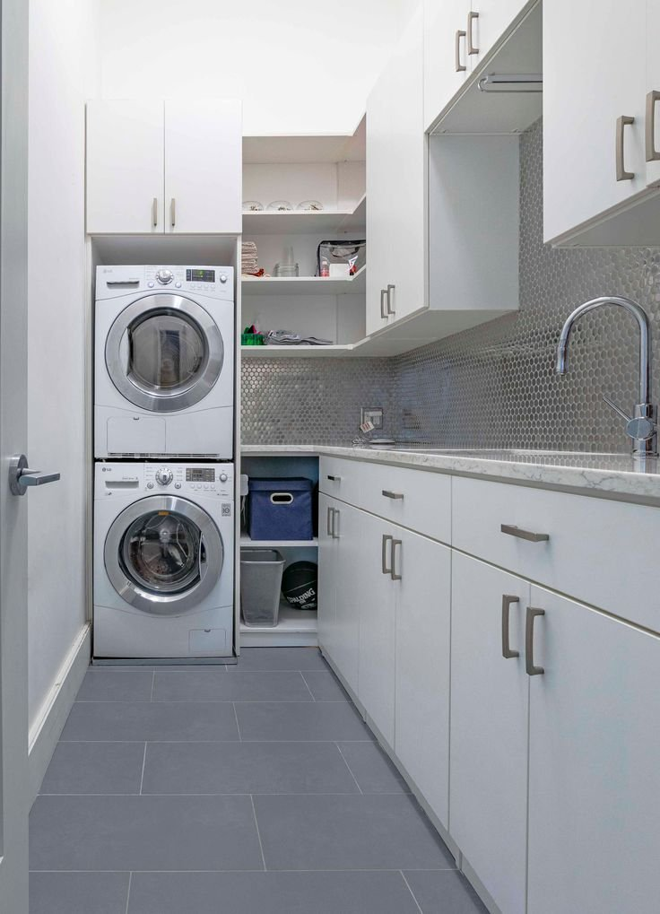
13. Bathroom Combo
This pairing sounds controversial at first, but it genuinely works well given the shared plumbing already in place.
Easy water access and efficient use of square footage make the bathroom a surprisingly logical spot for a stacked unit.
Keeping everything properly sealed and ventilated matters most here, nobody wants steamy towels and damp socks sharing the same air.
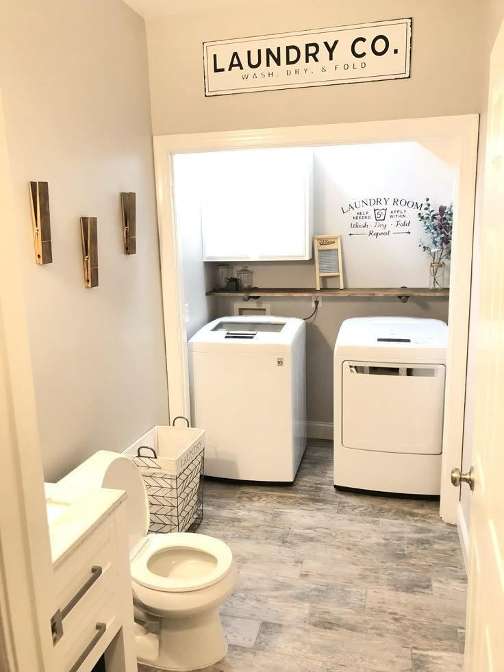
14. Narrow Hallway Setup
A hallway can genuinely work as a laundry spot, which opens up real options for a home without a dedicated room.
Compact stacked machines, shallow shelves, and wall-mounted lighting all fit a narrow footprint without crowding the walkway.
A hallway can transform into a fully functional laundry zone with the right planning, even in a surprisingly tight space.
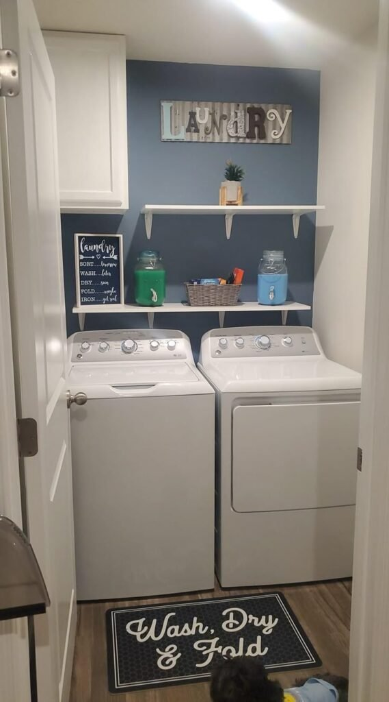
15. Open Shelving Above the Units
For anyone who prefers things visible and easy to grab, open shelving above a stacked unit keeps detergent and supplies within arm's reach.
It's affordable, flexible, and especially useful in a genuinely small space where cabinetry isn't an option.
Wood shelves add warmth, while metal brackets lean more industrial, either way, keeping the load light avoids any unwanted gravity lessons.
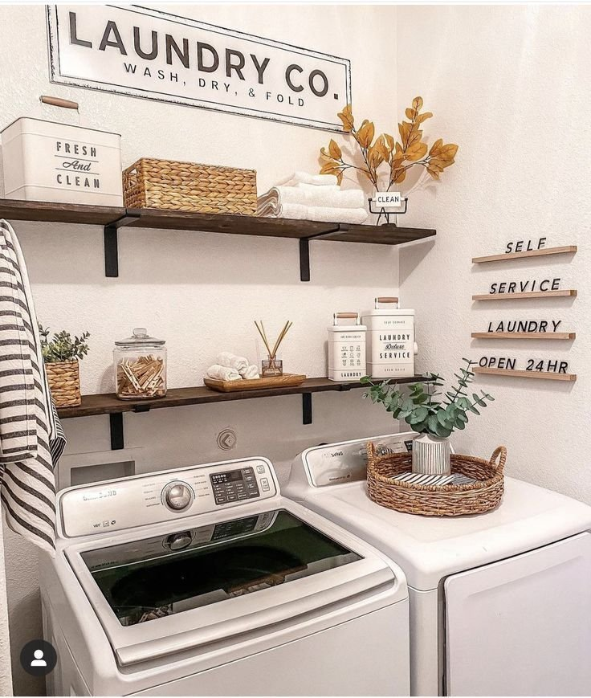
16. Built-In Cabinet Surround
Custom cabinetry instantly elevates a stacked setup, framing the washer and dryer so they read as furniture instead of appliances.
Upper cabinets hide detergent and supplies, while lower drawers hold laundry baskets within easy reach.
The whole unit stops looking like equipment and starts looking like it was designed into the room from the beginning.
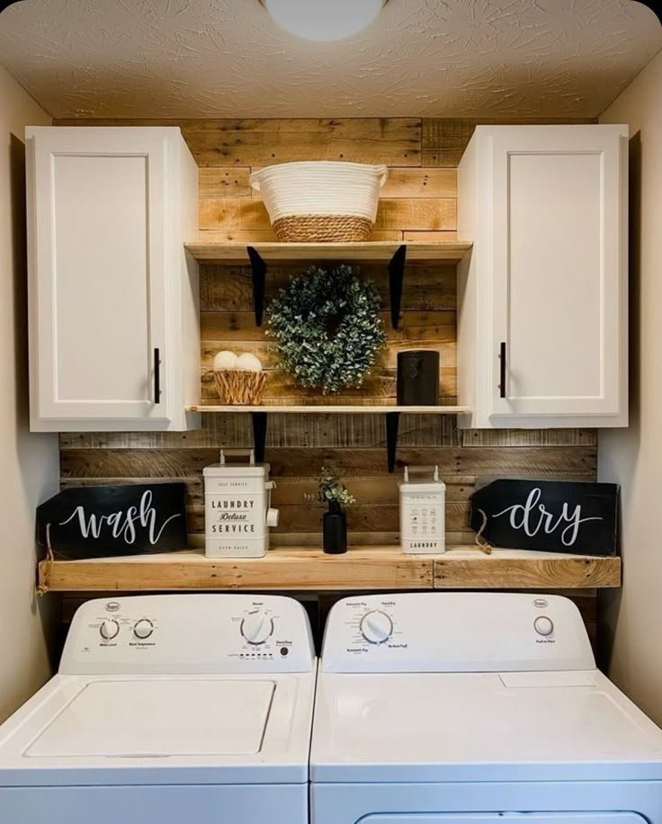
17. Closet-Style With Sliding Doors
This setup works wonders in an apartment or a bedroom closet, hiding the machines entirely when guests come over.
Sliding doors save the swing space a hinged door would eat up, and they keep noise genuinely contained while a load runs.
Wood or frosted glass doors look intentional rather than like a last-minute fix, and a motion-sensor light inside the closet is a small addition worth adding from the start.
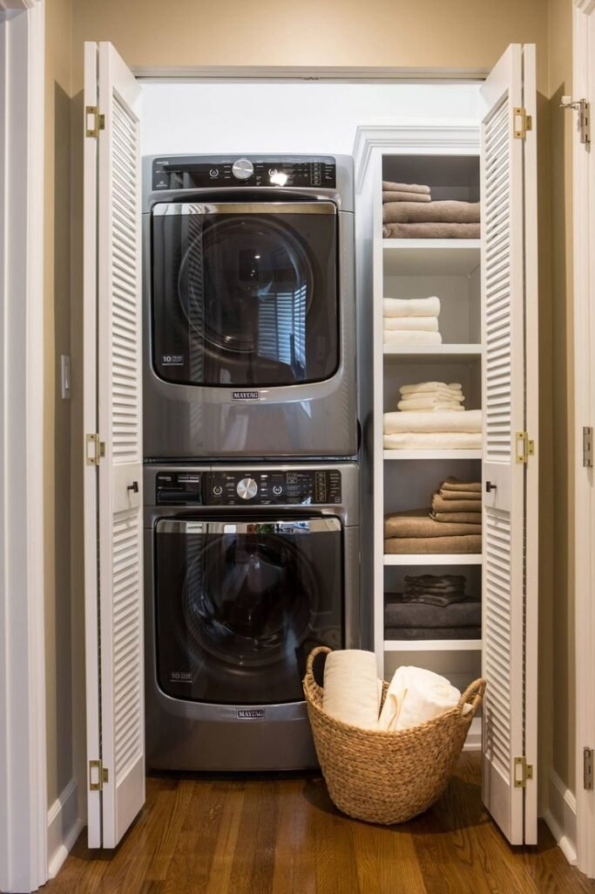
What to Think About First
Ventilation and access matter more in a stacked setup than people expect, the dryer still needs proper airflow, and both machines need to stay genuinely reachable for loading and unloading. Noise control isn't optional either, especially when the unit sits inside a closet near a bedroom or living space.
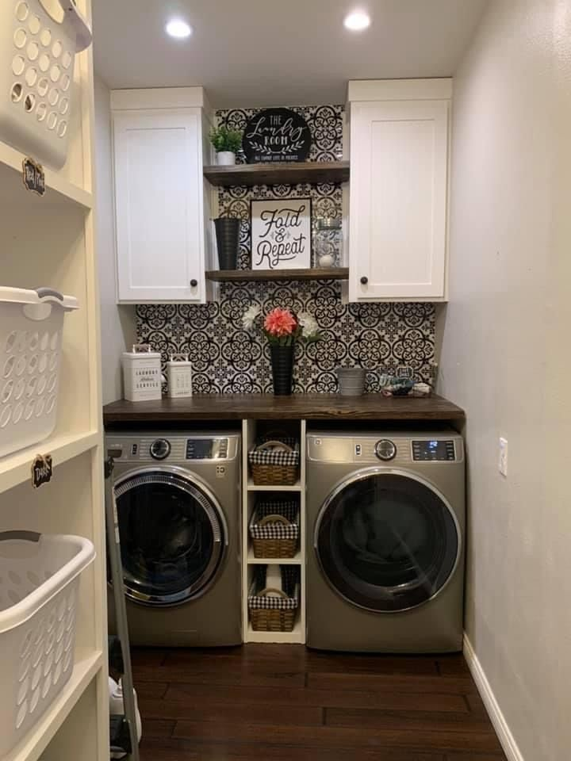
Final Thoughts
A stacked laundry setup doesn't have to feel like a compromise. With the right planning, it can genuinely outperform a full-size laundry room while using a fraction of the floor space.
Start with whatever configuration actually fits the space available, then layer in storage and style from there. Function first, always, the style follows naturally once the layout actually works.